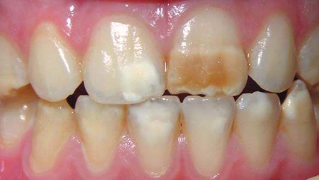
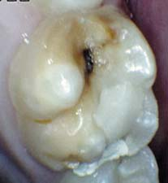
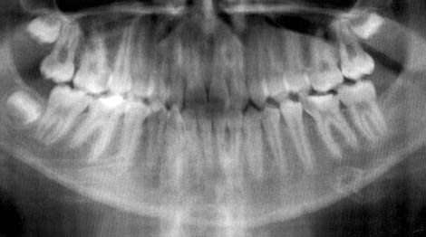
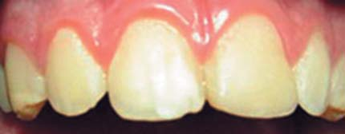
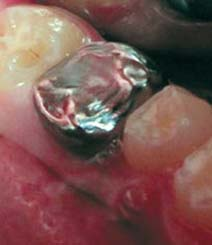
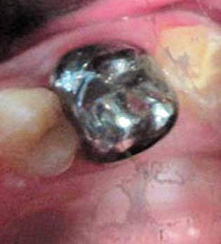
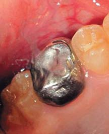
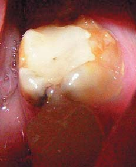
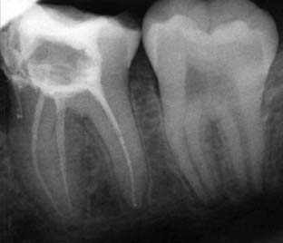
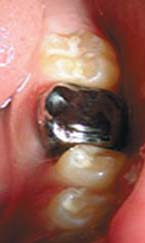

Наука · журнал «ДентАрт» 2017 №3
Молярно-різцева гіпомінералізація: задача з кількома невідомими. Частина II
MOLAR-INCISOR HYPOMINERALISATION: PROBLEM WITH SEVERAL UNKNOWN QUANTITIES
Частину I читайте у ДентАрті 1/2017
Лікування молярно-різцевої гіпомінералізації передбачає комплекс заходів, спрямованих на відновлення функції і естетики зубних рядів. Мають використовуватися засоби для ремінералізації, герметизація фісур різними матеріалами, методи корекції кольору фронтальних зубів, прямі та непрямі реставраційні техніки.
У чому проблема?
Підсумуємо викладене у попередній статті, присвяченій питанню молярно-різцевої гіпомінералізації (МРГ). Які найтиповіші ознаки цього патологічного процесу?
1. Ділянки ураження емалі у вигляді плям різних відтінків, від білого до жовто-коричневого кольору, у перших постійних молярах або у перших постійних молярах і різцях, наявні на зубах з моменту їх прорізування; асиметричність ураження (фото 1).
2. Швидке руйнування твердих тканин зубів, прогресування карієсу з розвитком його ускладнень і нерідко – ранньою втратою молярів (фото 2, 3).
3. Підвищена чутливість твердих тканин уражених зубів.
4. Супутня проблема – як правило, незадовільний стан гігієни ротової порожнини через високу чутливості емалі, з одного боку, і її підвищену шорсткість та ретенційну здатність щодо біоплівки – з другого.

Виходячи із зазначеного, основні завдання лікаря-стоматолога при веденні пацієнтів з МРГ такі:1-6
- рання діагностика, моніторинг уражених зубів у процесі їх прорізування, виявлення факторів ризику розвитку ускладнень;
- зниження чутливості твердих тканин зубів;
- профілактика раннього руйнування уражених зубів, зміцнення емалі;
- корекція естетичних порушень, особливо у фронтальних зубах;
- відновлення анатомічної цілісності частково зруйнованих зубів, профілактика прогресування карієсу (вторинна профілактика карієсу);
- лікування ускладнених форм карієсу при їх розвитку з урахуванням ступеня формування кореневої системи зуба;
- заміщення втрачених зубів (в основному перших молярів) із застосуванням методів ортопедичного та ортодонтичного лікування.
Деякі особливості патоморфології і перебігу МРГ істотно ускладнюють її лікування, а саме:
- висока чутливість твердих тканин не завжди дозволяє їх адекватно знеболити при реставраційному лікуванні;
- значна зміна структури емалі в осередках ураження не дозволяє сподіватися на поліпшення кольору зубів при застосуванні таких традиційних методів корекції, як інфільтрація, відбілювання (варто також нагадати, що відбілювання зубів протипоказане в дитячому віці), мікроабразія;
- зміни твердих тканин зубів створюють труднощі при визначенні можливих меж препарування і кількості тканини, яку необхідно видалити;
- сила зв'язку композитних реставраційних матеріалів з емаллю уражених зубів нижча у порівнянні з емаллю зубів, не уражених МРГ, що зумовлюється відсутністю формування класичних типів протравлювання емалі ортофосфорною кислотою;4, 7
- нерідко захворювання супроводжується руйнуванням зубів з незавершеним формуванням коренів, що вимагає особливих підходів при виникненні потреби в ендодонтичному лікуванні для забезпечення завершення формування кореня;
- за відсутності належної профілактики і лікування відбувається рання втрата перших молярів, що вимагає їх заміщення без застосування імплантації, з огляду на вік пацієнтів.


Фото 2. Молярно-різцева гіпомінералізація: ураження першого постійного моляра, ускладнене карієсом. Фото 3. Ортопантомограма пацієнта з МРГ. У щелепах є всі постійні зуби і зачатки відповідно до віку (за винятком зуба 38), корені зубів сформовані або закінчують своє формування, пульпові порожнини без змін. На апроксимально-медіальній поверхні зуба 36 – зона просвітлення, яка сполучається з порожниною зуба. Попередній діагноз: молярно-різцева гіпомінералізація, ускладнена хронічним фіброзним пульпітом зуба 36.
Таким чином, лікування МРГ поєднує більшість існуючих на сьогодні лікувально-профілактичних методів збереження та відновлення зубів у дітей і вимагає індивідуального підходу в кожному конкретному випадку.
Зниження чутливості і зміцнення емалі
Будь-яка профілактична програма ефективна лише за умови її спрямованості на домінуючі у кожному конкретному випадку фактори ризику розвитку карієсу. Отже, перший етап – визначення ступеня ризику розвитку карієсу, мотивація батьків і пацієнта на збереження стоматологічного здоров'я, корекція харчування, індивідуального догляду за ротовою порожниною, визначення і по можливості корекція впливу загальних факторів (соматичних захворювань, уживання певних препаратів і т.п.).8, 9
У дітей з МРГ особливо гостро стоїть питання призначення правильного індивідуального догляду за ротовою порожниною, жорсткого контролю його якості з боку лікаря і батьків, призначення необхідних основних і додаткових засобів індивідуальної гігієни. Крім цього, профілактична програма повинна передбачати регулярну професійну гігієну ротової порожнини і місцеве застосування препаратів, які підвищують мінералізацію емалі, – кальційвмісних і фторидвмісних, а також за наявності показань – герметизацію фісур і сліпих ямок.
Для індивідуального догляду за зубами слід рекомендувати зубні пасти, здатні знижувати чутливість твердих тканин (що містять сполуки калію, стронцію, аргінін-кальцієвий комплекс), фторид- і кальційвмісні ремінералізуючі пасти. За високого рівня чутливості можна рекомендувати зубні щітки з м'якою щетиною, але при цьому ретельно контролювати якість видалення зубних відкладень із застосуванням індикаторів.8
Для ремінералізації емалі уражених зубів ефективні продукти з казеїнфосфопептид-аморфним кальційфосфатом (в Україні доступні продукти Tooth Mousse та MI-Paste виробництва компанії GC). Із фторидвмісних продуктів доведена ефективність фторлаку, що містить 22,600 ppm F (Duraphat, Colgate Oral Care). Ефективні також фтористі гелі, зокрема ті, що містять 0.4% SnF₂ (1,000 ppm F) (Gelkam, Colgate Oral Care), за умови застосування кілька разів на тиждень після чищення зубів.6, 10-14
Для герметизації зубів, що частково прорізалися, за неможливості адекватної ізоляції доцільне використання як герметиків склоіономерних цементів (СІЦ), тим більше, що доведена швидша мінералізація фісури під СІЦ у порівнянні з мінералізацією при контакті з ротовою рідиною.15 У подальшому можлива їх заміна на композитні герметики при виникненні можливості якісного виконання процедури герметизації.16 Герметики доцільно застосовувати з адгезивною системою, хоча залишається відкритим питання про якість мікромеханічного з'єднання з гіпомінералізованою емаллю.7
Зазначені профілактичні методи застосовуються і після реставраційного лікування з метою вторинної профілактики карієсу.
Корекція естетичних порушень у фронтальних зубах
Мінімально інвазивні методи корекції кольору фронтальних зубів при МРГ бувають малоефективними. Відбілювання (як домашнє, так і офісне) може використовуватися у дорослих, але протипоказане в дитячому і підлітковому віці.17 Метод мікроабразії найчастіше малоефективний, оскільки ураження емалі має глибокий характер, проте мікроабразія може застосовуватися як підготовчий етап до реставраційного лікування.18, 19 Метод композитної інфільтрації (із застосуванням Icon, DMG, Гамбург, Німеччина) рекомендований при початкових каріозних ураженнях, але не при дефектах розвитку, проте його застосування досліджувалося, і хоча не забезпечувало поліпшення кольору, але підвищувало в подальшому адгезивне з'єднання з композитом in vitro.7, 20 Однак методи інфільтрації на основі низьков'язкої TEGMA продовжують розвиватися і забезпечують можливість підвищення фізичних властивостей гіпомінералізованої емалі, що не виключає в майбутньому ефективного застосування методу і в разі МРГ.20, 21
Таким чином, для корекції естетичних порушень у різцях частіше доводиться застосовувати інвазивні методи.6, 10 Може використовуватися ламінування вестибулярної поверхні із застосуванням композитних матеріалів з наступною заміною на керамічні вініри у дорослішому віці. Але навіть при композитному ламінуванні слід враховувати ступінь зрілості зуба, великий розмір коронкової частини порожнини зуба і ризик її розкриття при препаруванні. Тому реставраційне лікування вимагає чітких показань і акуратного виконання.
Відновлення анатомічної цілісності частково зруйнованих зубів
Для відновлення форми і функції зруйнованих в результаті МРГ зубів доцільне застосування внутрішньокоронкових реставрацій з використанням адгезивних матеріалів або відновлення за допомогою коронок.6,10 При виборі методу прямої реставрації важливий правильний підхід до препарування і підбору відповідного матеріалу.
Застосування склоіономерних цементів (традиційних або гібридних) доцільне в ролі тимчасової реставрації за неможливості виконати композитні відновлення, зважаючи на складність якісної ізоляції, недостатній рівень співпраці дитини, неможливість забезпечення мікромеханічної адгезії композиту.22-25
Композитні реставраційні матеріали є матеріалом вибору (за можливості дотримання техніки їх використання у даної дитини) (фото 4), якщо ділянки ураженої емалі чітко відмежовані від видимо здорової емалі і локалізуються на одній або двох поверхнях ураженого зуба вище рівня ясен, бажано без залучення жувальних горбів.26 З огляду на знижену можливість адгезії до гіпомінералізованої емалі, рекомендується повне видалення дефектної (зміненої в кольорі) емалі; консервативний підхід до препарування в уражених МРГ зубах загрожує порушенням крайового прилягання композитної реставрації та необхідністю переліковування у подальшому. У деяких випадках ліпші результати демонструють самопротравлюючі адгезивні системи, що можна пояснити неможливістю отримання класичного малюнка протравленої емалі за традиційного застосування для протравлювання ортофосфорної кислоти.27, 28

Опубліковані дані про ефективність методу «підготовки» емалі до реставрації зубів при МРГ і гіпомінералізаційній формі недосконалого амелогенезу, який полягає в обробці емалі зубів після протравлювання 5% розчином натрію гіпохлориту для видалення протеїнів, що оточують кристали гідроксиапатиту і наявні у таких зубах рясніше, ніж у неуражених.21, 29-31
У будь-якому випадку необхідний періодичний контроль за крайовим приляганням композитних реставрацій.
У разі середньотяжкого і тяжкого перебігу МРГ відновлення уражених молярів доцільніше здійснювати за допомогою сталевих коронок (фото 5), які забезпечують профілактику подальшого зносу зуба, створення правильних інтерпроксимальних контактів та оклюзійних співвідношень, усувають підвищену чутливість твердих тканин і не вимагають значних часових і матеріальних витрат.6, 10 У дорослішому віці ставиться питання про постійні індивідуальні литі або керамічні конструкції – вкладки, накладки, коронки.



Фото 5. Тонкостінні індивідуально виготовлені тимчасові сталеві коронки на перших постійних молярах, зафіксовані з метою збереження коронки зуба і ключа оклюзії при МРГ (роботу виконав доцент кафедри ортодонтії і пропедевтики ортопедичної стоматології В. П. Вознюк).
При виникненні необхідності лікування ускладнених форм карієсу воно здійснюється у відповідності з протоколом лікування пульпіту або періодонтиту в постійному зубі з незавершеним формуванням кореня і не має яких-небудь особливостей, пов'язаних саме з МРГ (фото 6). Але головне завдання дитячого стоматолога – не допустити прогресування патологічного процесу до потреби в ендодонтичному лікуванні.



Фото 6. Ендодонтичне лікування першого моляра з МРГ, ускладненою пульпітом: а – початковий стан, зуб раніше запломбований; б – рентгенограма після постійної обтурації кореневих каналів; в – відновлення коронки зуба за допомогою тонкостінної сталевої коронки.
Література
- Jalevik B. Dental treatment, dental fear and behaviour management problems in children with severe enamel hypomineralization of their permanent first molars / B.Jalevik, G.A.Klingberg // Int. J. Paediatr. Dent. – 2002. – Vol.12. – Р.24-32.
- Weerheijm K.L. Molar incisor hypomineralisation (MIH): clinical presentation, aetiology and management / K.L.Weerheijm // Dent. Update. –2004. –Vol. 31. –P.9-12.
- MathuMuju K. Diagnosis and treatment of molar incisor hypomineralization / K.MathuMuju, J.T.Wright // Compend. Contin. Educ. Dent. – 2006. – Vol.27, №11. – Р.604-610.
- William V. Molar incisor hypomineralization: review and recommendations for clinical management / V.William, L.B.Messer, M.F Burrow // Pediatr. Dent. –2006. – Vol. 28, №3. – Р. 224-232.
- Lygidakis N.A. Treatment modalities in children with teeth affected by molar-incisor enamel hypomineralisation (MIH): a systematic review / N.A.Lygidakis // Eur. Arch. Paediatr. Dent. – 2010. –Vol.11, №2. – Р.65–74.
- Drummond B.K. Planning and care for children and adolescents with dental enamel defects: etiology, research and contemporary management / B.K. Drummond, N.Kilpatrick. –Springer Verlag Berlin Heidelberg, 2015. –175 р.
- Mahoney E.K. Micromechanical and structural analysis of compromised dental tissues: PhD thesis / E.K.Mahoney. –University of Sydney, 2005.
- Хоменко Л.О. Аспекти діагностики і лікування молярно-різцевої гіпомінералізації емалі у дітей / Л.О.Хоменко, Н.В.Біденко, С.Ф.Любарець // Новини стоматології . –2011. –№ 1. – С. 73–76.
- Moynihan P.J. Effect on caries of restricting sugars intake: systematic review to inform WHO guidelines / P.J.Moynihan, S.A.M.Kelly // J. Dent. Res. – 2014. – Vol.93, №1. – Р.8-18.
- Best Clinical Practice Guidance for clinicians dealing with children presenting with Molar-Incisor-Hypomineralisation (MIH) An EAPD Policy Document / N.A.Lygidakis, F.Wong, B.Jalevik et al. // European Archives of Paediatric Dentistry. – 2010. –Vol.11, № 2. –Р.75-81.
- Reynolds E.C. New modalities for a new generation: Casein phosphopeptide-amorphous calcium phosphate, a new remineralization technology / E.C.Reynolds // Synopses. –2005. –Vol.30. – Р.1-6.
- Featherstone J.D.B. Remineralization, the natural caries repair process – the need for new Approaches / J.D.B.Featherstone // Adv. Dent. Res. – 2009. –Vol.21, №1. – Р.4–7.
- Ion release and physical properties of CPP-ACP modificed GIC in acid solutions / I.Zalizniak, J.Palamara, R.Wong et al. // J. Dent. – 2013. – Vol.41, №5. – Р.449-454.
- Mineralisation of developmentally hypomineralised human enamel in vitro / F.Crombie, N.Cochrane, D.Manton et al. // Caries Res. – 2013. –Vol.47, №3. – Р.259-263.
- Crombie F. Therapie der Molaren-Inzisiven-Hypomineralisation (MIH) in einem schwierigen Umfeld (German translation of MIH – Therapy with difficult conditions, special characteristics of MIH teeth) / F.Crombie, D.Manton, E.Reynolds // Quintessenz. – 2011. – Vol.62, №12. – Р.1593-1599.
- Simonsen R.J. Pit and fissure sealant: A review of the literature / R.J.Simonsen // Pediatr. Dent. – 2002. – Vol.24. – Р.393-414.
- Dadoun M.P. Safety issues when using carbamide peroxide to bleach vital teeth – a review of the literature / M.P.Dadoun, D.W.Bartlett // Eur. J. Prosthodont. Restor. Dent. – 2003. –Vol.11, №1. – Р.9-13.
- Donly K.J. Enamel microabrasion: a microscopic evaluation of the «abrosion-effect» / K.J.Donly, M.O'Neill, T.P.Croll // Quintessence Int. – 1992. – Vol.23, №3. – Р.175-179.
- Elkhazindar M.M. Enamel microabrasion / M.M.Elkhazindar, R.R.Welbury // Dent. Update. – 2000. – Vol.27, №4. – Р.194-196.
- Resin infiltration of developmentally hypomineralised enamel / F.Crombie, D.Manton, J.Palamara, E.Reynolds // Int. J. Paediatr. Dent. – 2014. – Vol.24, №1. – Р.51-55.
- Chay P. The effect of resin infiltration and oxidative pretreatment on microshear bond strength of resin composite to hypomineralised enamel / P.Chay, D.Manton, J.Palamara // Int. J. Paediatr. Dent. – 2014. – Vol.24, №4. – Р.252-267.
- Mahoney E.K. The treatment of localized hypoplastic and hypomineralized defects in first permanent molars / E.K.Mahoney // N.Z.Dent. J. – 2001. – Vol.97. – Р.101-105.
- Croll T.P. Restorative options for malformed permanent molars in children / T.P.Croll // Compend. Contin. Educ. Dent. – 2000. – Vol.21. – Р.676-682.
- Berg J.H. Glass ionomer cements / J.H.Berg // – Pediatr. Dent. – 2002. – Vol.24. – Р.430-438.
- Croll T.P. Glass ionomer cements in pediatric dentistry: A review of the literature / T.P.Croll, J.W.Nicholson // Pediatr. Dent. –2002. – Vol.24. – Р.423-429.
- Fayle S.A. Molar incisor hypomineralization: Restorative management / S.A.Fayle // Eur. J. Paediatr. Dent. – 2003. – Vol.4. – Р.121-126.
- Jalevik B. Scanning electron micrograph analysis of hypomineralized enamel in permanent first molars / B.Jalevik, W.Dietz, J.G.Noren // Int. J. Paediatr. Dent. – 2005. – Vol.15, №4. –P.233-240.
- Enamel roughness and depth profile after phosphoric acid etching of healthy and fluorotic enamel / I.Torres-Gallegos, V.Zavala-Alonso, N.Patino-Marin et al. // Aust. Dent. J. –2012. – Vol.57, №2. – Р.151-156.
- Enamel pretreatment with sodium hypochlorite to enhance bonding in hypocalcified amelogenesis imperfecta: Case report and SEM analysis / R.D.Venezie, G.Vadiakas, J.R.Christensen, J.T.Wright // Pediatr. Dent. – 1994. – Vol.16. – Р.433-436.
- Protein content of molar-incisor hypomineralisation enamel / R.A.Farah, B.C.Monk, M.V.Swain, B.K.Drummond // J. Dent. –2010. – Vol.38, №7. – Р.591-596.
- Surface integrity governs the proteome of hypomineralized enamel / J.E.Mangum, F.A.Crombie, N.Kilpatrick et al. // J. Dent. Res. – 2010. – Vol.89, №10. – Р.1160-1165.